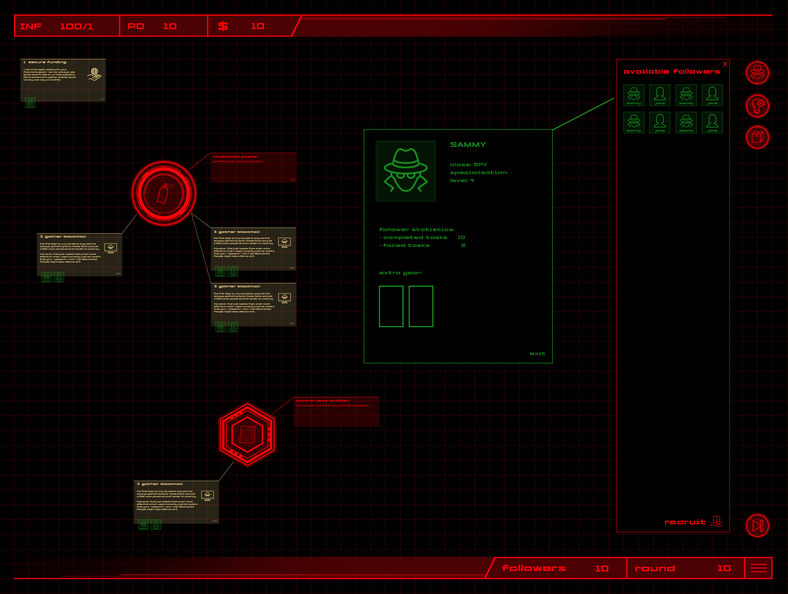

About the Game
Rise of Ravens is a multiplayer game set in a futuristic world. The goal of the game is to demonstrate the inner workings of fascism and illustrate the rise of a fascist movement by letting the players experience it in a virtual manner. In Rise of Ravens, one player will take on the role as leader of a fascist movement and others will play as their followers. Together they try to fulfil the goal of their movement – total domination. As the leader, you have to manage your resources and followers in order to steadily grow your influence and power. As your movement grows, you will have to promote some of your followers to take care of leadership responsibilities for you. But choose carefully, once your followers have had a taste of power, they might not want to give it up again. As the follower, it is your responsibility to contribute to your leader’s success. Fulfil the tasks your leader gives you, be a good follower, and eventually you will see the movement flourish. Or maybe you would like to take control for yourself? Rise through the ranks of your movement, gain power for yourself, and you might just be able to do it.
The 14 Signs of Fascism
When researching fascism, there is no way around the 14 signs of fascism as defined by Umberto Eco. During the design process of Rise of Ravens, this list has always been a good resource to turn to and draw inspiration from. Below, you can read through the 14 signs, but if you want to learn more you can follow this link.
1. The Cult of Tradition
One has only to look at the syllabus of every fascist movement to find the major traditionalist thinkers. The Nazi gnosis was nourished by traditionalist, syncretistic, occult elements.
2. The Rejection of Modernism
The Enlightenment, the Age of Reason, is seen as the beginning of modern depravity. In this sense Ur-Fascism can be defined as irrationalism.
3. The Cult of Action for Action's Sake
Action being beautiful in itself, it must be taken before, or without, any previous reflection. Thinking is a form of emasculation.
4. Disagreement is Treason
The critical spirit makes distinctions, and to distinguish is a sign of modernism. In modern culture the scientific community praises disagreement as a way to improve knowledge.
5. Fear of Difference
The first appeal of a fascist or prematurely fascist movement is an appeal against the intruders. Thus Ur-Fascism is racist by definition.
6. Appeal to Social Frustration.
One of the most typical features of the historical fascism was the appeal to a frustrated middle class, a class suffering from an economic crisis or feelings of political humiliation, and frightened by the pressure of lower social groups.
7. The Obsession with a Plot
Thus at the root of the Ur-Fascist psychology there is the obsession with a plot, possibly an international one. The followers must feel besieged.
8. The Enemy is both Strong and Weak
By a continuous shifting of rhetorical focus, the enemies are at the same time too strong and too weak.
9. Pacifism is Trafficking with the Enemy
For Ur-Fascism there is no struggle for life but, rather, life is lived for struggle.
10. Contempt for the Weak
Elitism is a typical aspect of any reactionary ideology.
11. Everybody is Educated to become a Hero
In Ur-Fascist ideology, heroism is the norm. This cult of heroism is strictly linked with the cult of death.
12. Machismo and Weaponry
Machismo implies both disdain for women and intolerance and condemnation of nonstandard sexual habits, from chastity to homosexuality.
13. Selective Populism
There is in our future a TV or Internet populism, in which the emotional response of a selected group of citizens can be presented and accepted as the Voice of the People.
14. Ur-Fascism speaks Newspeak
All the Nazi or Fascist schoolbooks made use of an impoverished vocabulary, and an elementary syntax, in order to limit the instruments for complex and critical reasoning.
Game Design

Above, you can see a rough sketch of the basic gameplay loop, wherein the leader has to manage their resources and followers to accomplish their task, finish his projects, and react to world events. However, as the movement grows, so does the number of things to manage. To help in this task, the leader can promote some of their followers, essentially making them leaders of their own, smaller subregions.
Leader View
The leader has to keep track of and manage a lot of things. Below is an example of what the UI looks like, including a world event (circle) a project (hexagon) as well as their associated tasks. To the right is a list of all the followers currently available to the leader. At the top left of the screen are the three key resources: influence, which indicates how much traction the movement is getting; public opinion, which indicates how well liked the leader currently is; and finally money, which is needed to fund all sorts of things, from items to projects.
Follower View
Not every task has to end in conflict. But if it does, followers need to make sure they can come out successfully. Combat happens in a tactical turn-based system where the follower draws cards to decide what course of action they take. Below, you can see an example of such a scene and an example of what a level might look like.
Level Design
Moodboard

Red has been chosen as the main color because it invokes strong emotions. In a video game context, red often symbolizes enemies. In our case, your color is red. . .
The Logo
Here you can see a few iterations of the logo before we settled on the final design.
And below, the final version.
The Raven was chosen because it is commonly associated with intelligence and cunning, suvival, community, but also danger/warning. Furthermore, the raven as a symbol harkens back to the nordic myths. Perfect for a traditionalist movement.